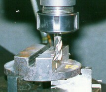
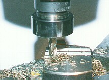

LMP>Research Guidelines>USICAV>Groove milling with HSS (high speed steel) end mill
OBJECTIVESHigh speed end mills are greatly applied on metal-mechanics industry. Those tools are very versatile and make possible to execute an ample milling operation series. Slots, key grooves, profiles and cavities are some examples of operations that can be executed with end mills. Its grand utility is linked to its very easy acquisition, low costs and easy resharpening. This work’s main objective is to enhance basic information regarding the behavior of this type of tool in process. Amongst that information, it can be cited the efforts produced on slots opening, the forces behavior, the wear type and evolution and the influence of the process input parameters (tool geometry, cutting speed, feed, cutting depth, cutting width, cutting fluid etc). PROCEDURESThe process of basic information obtainment about end mills use has as an initial step a bibliographical review on the theme on national and international specialized publications. From this research there will be made a database with information of the state of the art for this process. On the continuity of this work, machining assays will be planned and executed, and those will aim the confirmation of known aspects or the search for new information and behaviors. For that reason, several equipments are available, such as: numerically controlled milling machine, piezoelectric platform for forces measurement, a complete data acquisition system, equipments for results evaluation and measurement, and an ample computational structure support. RESULTSThe expected results are useful, so that the complex fabrication process by milling is known on a less empirical way and with higher scientific fundament. It is hoped also of this work to be the beginning and the base for further
developments on milling and cavity fabrication areas.   |
| Contact:
USICAV Rolf Bertrand Schroeter Prof. Dr. Eng. |
Last update 04.07.2006 |